Authored carrier cross-basin authority
Revision 048 is the treatment. Revision 029 is a matched near predecessor only for maquette, dragon, and golem. The earlier 3764-vertex envelope is visual evidence that these basins were fertile, not a causal control. Every new output below binds the source, exact prompt, seed, settings, effective route, and Greenroom job receipt.
33 new Flux cells8 prompt families3 matched seeds24 treatment + 9 controls
dragon
material-plus-anatomical-embellishment
Rich elaboration survives the stronger carrier. Against revision 029 at matched seeds, revision 048 more consistently separates neck, shoulder, barrel, and hindquarter while seed still controls creature identity.
PromptElaborate this armature into a finished creature with scaly hide, ridged spine, and horned head.flux2-klein-9b · q4 · 512x512 · 8 steps · guidance 1.0 · MLX cache 48 GiB
comparison classsourceseed 80301seed 80302seed 80413
Historical fertile precedentDifferent authored envelope; not a causal control. Route defaults incompletely preserved.
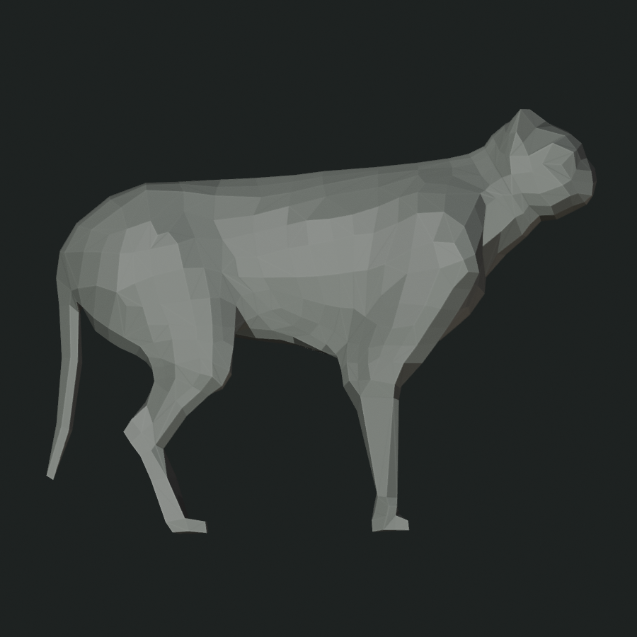
historical source
50bac29be153
3764 verticesseed 80301
914414b1f81d
job 0cc24453d286seed 80302
72e7c922bb0a
job 2739836ccbe0seed 80413
dda746620fdb
job 381d4c5d9f50Near predecessor controlrevision-029
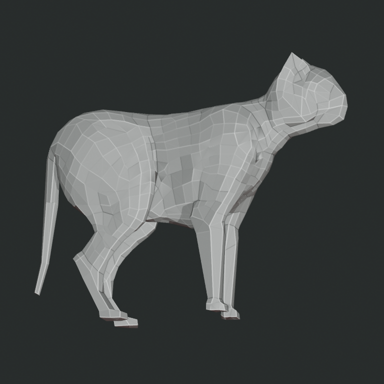
revision-029 source
c5dc6cc7eb8cseed 80301
ae060eaec62d
job 119728f460fcseed 80302
861f04ab161f
job 897b12ee771aseed 80413
8e34c2bf1f3f
job 3d42ffaa74f1Current authored carrierrevision-048
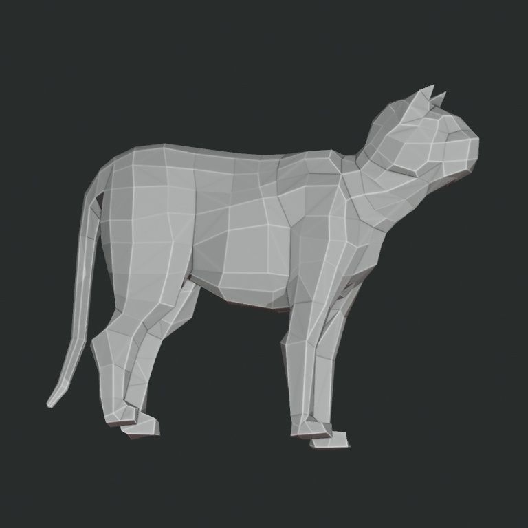
revision-048 source
9e2fa35f9012 seed 80301
seed 80301
1e5a5284925a
job 7f8ae87ce50eseed 80302
ccef01a90572
job 0e7570d16efbseed 80413
6f359a4da3ee
job 9c8961f643e3golem
rigid-segmented-surface
Cleanest structural transfer and matched comparison. Rigid plates expose revision 048's higher neck and more separated mass organization instead of erasing them.
PromptElaborate this armature into a finished creature of mossy weathered stone with lichen and cracked plates.flux2-klein-9b · q4 · 512x512 · 8 steps · guidance 1.0 · MLX cache 48 GiB
comparison classsourceseed 80301seed 80302seed 80413
Historical fertile precedentDifferent authored envelope; not a causal control. Route defaults incompletely preserved.
historical source
50bac29be153
3764 vertices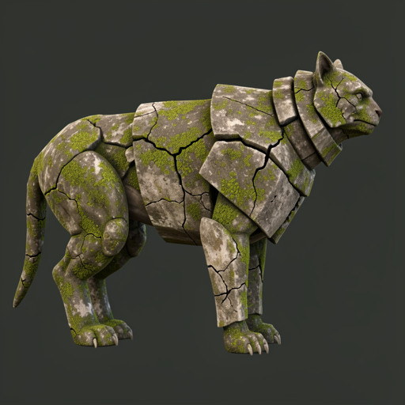
seed 80301
e3d573c84601
job 7d1140014bc4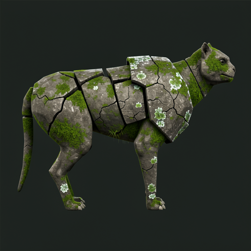
seed 80302
5f3286cbf329
job c4f9a9bb0df3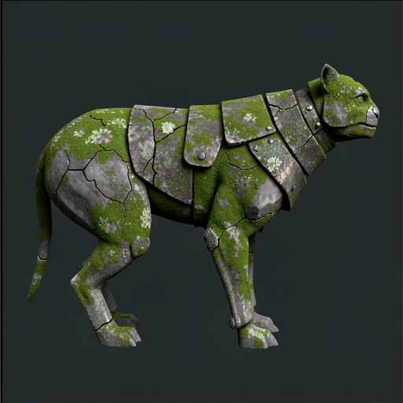
seed 80413
cba1c1e66323
job 1135a76512a0Near predecessor controlrevision-029
revision-029 source
c5dc6cc7eb8c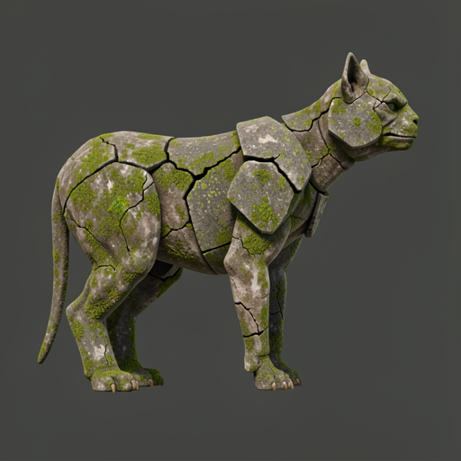
seed 80301
a77a41b8201d
job 0f2be95c08a0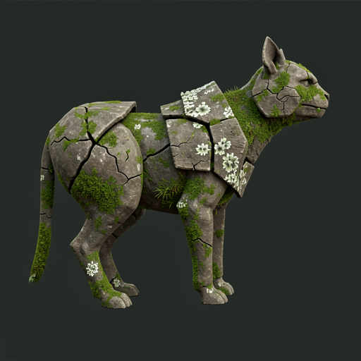
seed 80302
1caceac4c56a
job 4455178a9c20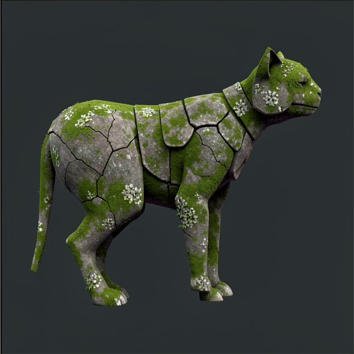
seed 80413
782207eed461
job 545df820dea2Current authored carrierrevision-048
revision-048 source
9e2fa35f9012 seed 80301
seed 80301
7c60876bab19
job 457db616a201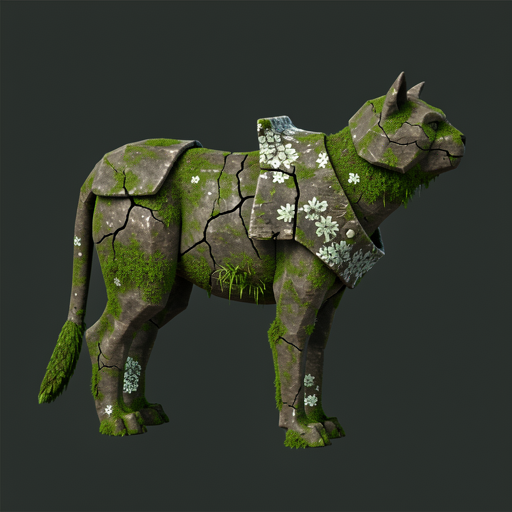
seed 80302
25daeed0fc01
job 3d8a7cdf73c6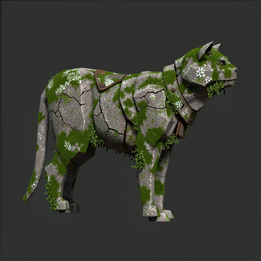
seed 80413
de3355b1ef3a
job c8a8b84489d9phantom
translucent-nonrigid-surface
Radically translucent material and internal detail preserve the carrier's macrostructure across all seeds.
PromptElaborate this armature into a finished creature with translucent drifting form and hollow glowing eyes.flux2-klein-9b · q4 · 512x512 · 8 steps · guidance 1.0 · MLX cache 48 GiB
comparison classsourceseed 80301seed 80302seed 80413
Historical fertile precedentDifferent authored envelope; not a causal control. Route defaults incompletely preserved.
historical source
50bac29be153
3764 verticesseed 80301
45dffa0fcf86
job df031da5b402seed 80302
96944d78353a
job 7578673d33ccseed 80413
74afcb6e5428
metadata absentCurrent authored carrierrevision-048
revision-048 source
9e2fa35f9012seed 80301
332828df11ab
job f3fc3c35e19c seed 80302
seed 80302
f74395a1139a
job 315d8a815322seed 80413
ea5110753c74
job 21c6065e0a76maquette
neutral-completion
The authority trade is explicit: revision 029 readily becomes finished flesh, while revision 048 often remains close to the low-poly source. Stronger structure now requires stronger or better-targeted elaboration pressure.
PromptElaborate this partially finished maquette into a finished creature.flux2-klein-9b · q4 · 512x512 · 8 steps · guidance 1.0 · MLX cache 48 GiB
comparison classsourceseed 80301seed 80302seed 80413
Historical fertile precedentDifferent authored envelope; not a causal control. Route defaults incompletely preserved.
historical source
50bac29be153
3764 vertices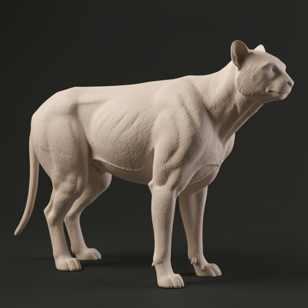
seed 80301
c0375fbd85d6
job 8665fa8c2f72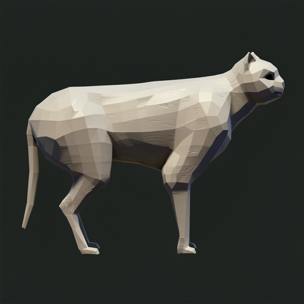
seed 80302
dd4ae6658851
job 69699c07ed8f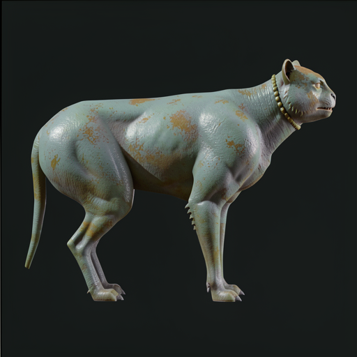
seed 80413
628c5c9a7829
job 6b4a4fde07b8Near predecessor controlrevision-029
revision-029 source
c5dc6cc7eb8c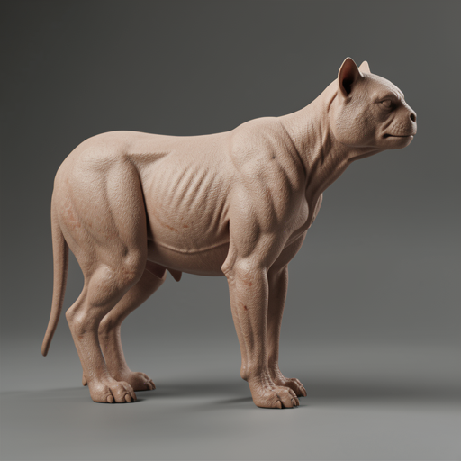
seed 80301
1d041d7b7304
job a40204a8c8caseed 80302
6505e98e2b13
job f0cc2d91c968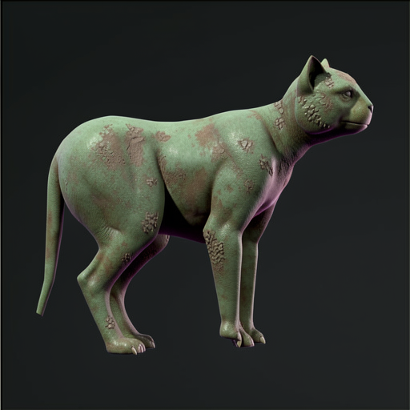
seed 80413
cb85f8bfaf64
job 7d1c859c6bcaCurrent authored carrierrevision-048
revision-048 source
9e2fa35f9012 seed 80301
seed 80301
c93f1d41880f
job 46a0e319c7c1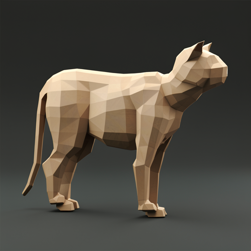
seed 80302
65838404209f
job 39475190d874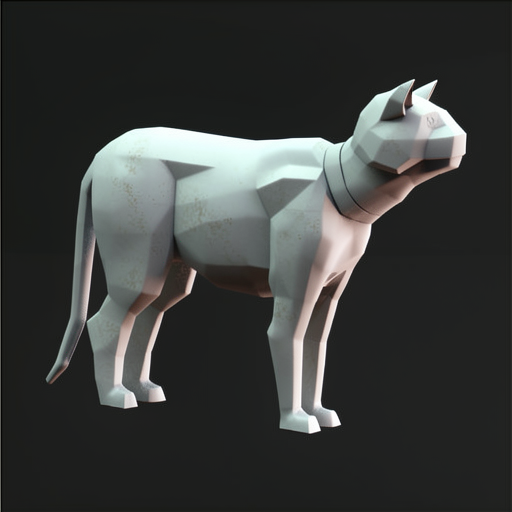
seed 80413
de0f2c26095a
job fcf5aa22689fcomparison classsourceseed 80301seed 80302seed 80413
Historical fertile precedentDifferent authored envelope; not a causal control. Route defaults incompletely preserved.
historical source
50bac29be153
3764 vertices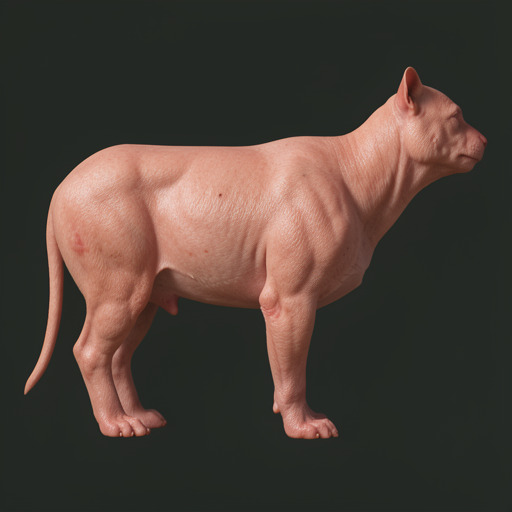
seed 80301
190160d0f337
job 03a802b2f4a1not run
not run
Current authored carrierrevision-048
revision-048 source
9e2fa35f9012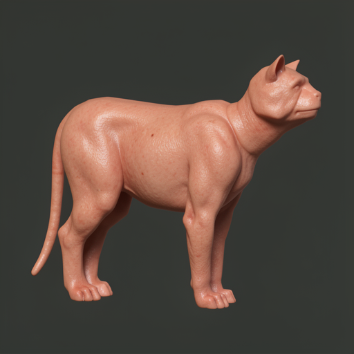
seed 80301
0ec345f58b73
job 52594060480f seed 80302
seed 80302
b97d4670fdc3
job 280a8a6a82adOptional reveal
Visible superficial abrasion and irritation marks on otherwise intact skin.
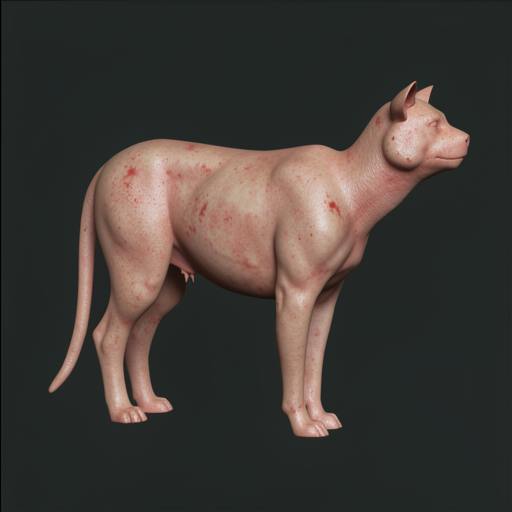
seed 80413
3eaecdf79531
job e4e1ae908cabcomparison classsourceseed 80301seed 80302seed 80413
Historical fertile precedentDifferent authored envelope; not a causal control. Route defaults incompletely preserved.
historical source
50bac29be153
3764 vertices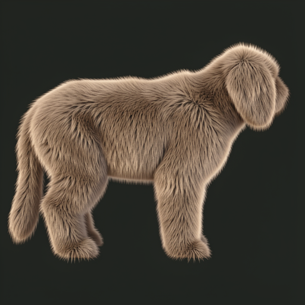
seed 80301
81881b980f31
job c6775d07d9dbnot run
not run
Current authored carrierrevision-048
revision-048 source
9e2fa35f9012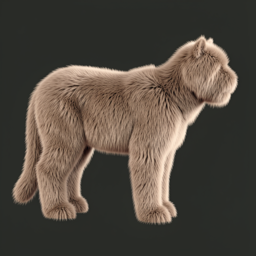
seed 80301
a869dbb2ee05
job 9f6a7222f54c seed 80302
seed 80302
de34725947ce
job c90081ff32f2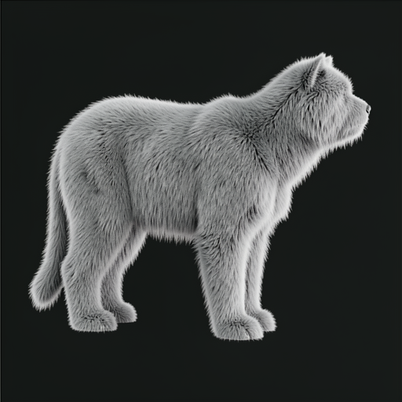
seed 80413
d7b603c99966
job 4015de978c87comparison classsourceseed 80301seed 80302seed 80413
Historical fertile precedentDifferent authored envelope; not a causal control. Route defaults incompletely preserved.
historical source
50bac29be153
3764 vertices seed 80301
seed 80301
56ea3103f375
job 87fa1543041bnot run
not run
Current authored carrierrevision-048
revision-048 source
9e2fa35f9012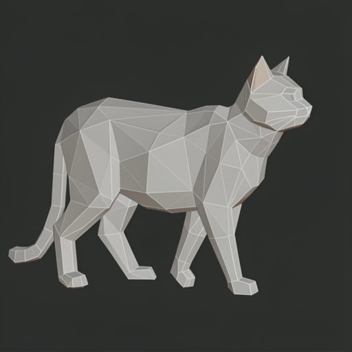
seed 80301
1b49c99498cf
job 785121fc1a53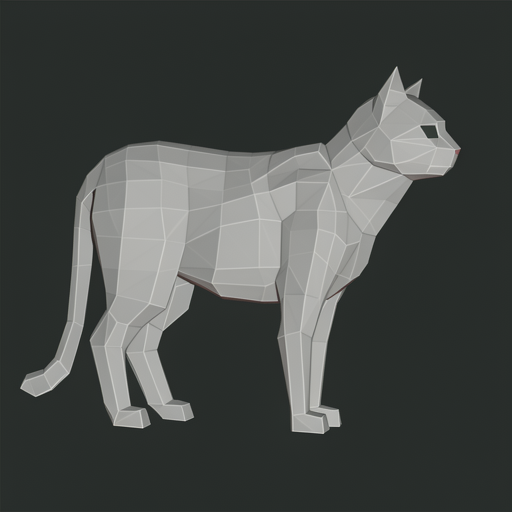
seed 80302
1737d64b82ba
job 320d4c594820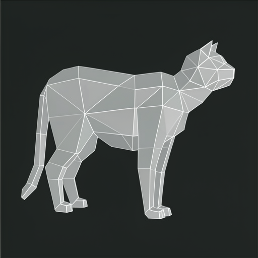
seed 80413
670c74397c17
job cacef33edf12comparison classsourceseed 80301seed 80302seed 80413
Historical fertile precedentDifferent authored envelope; not a causal control. Route defaults incompletely preserved.
historical source
50bac29be153
3764 verticesseed 80301
7b1ef9749bca
job 241a4b9f9a93not run
not run
Current authored carrierrevision-048
revision-048 source
9e2fa35f9012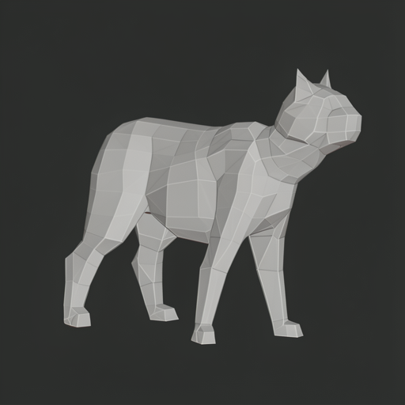
seed 80301
290b2f1767e4
job d599396acf04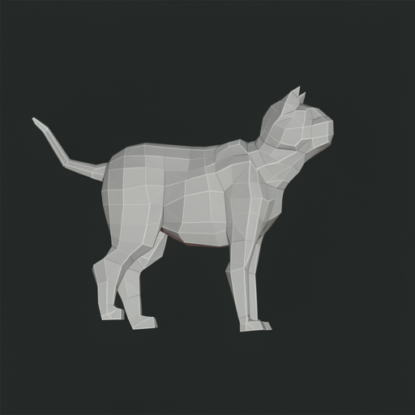
seed 80302
fa320fae3e92
job d38d699d3352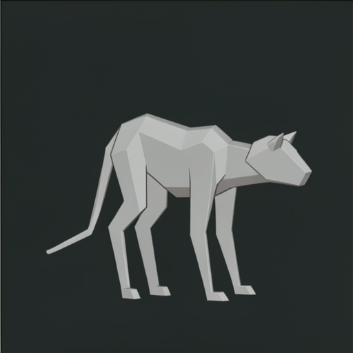
seed 80413
4ef8f3e00557
job eba8549d17b1